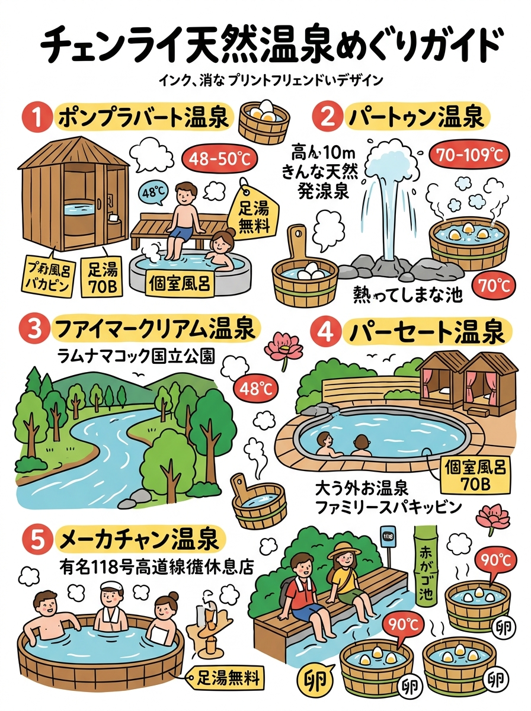
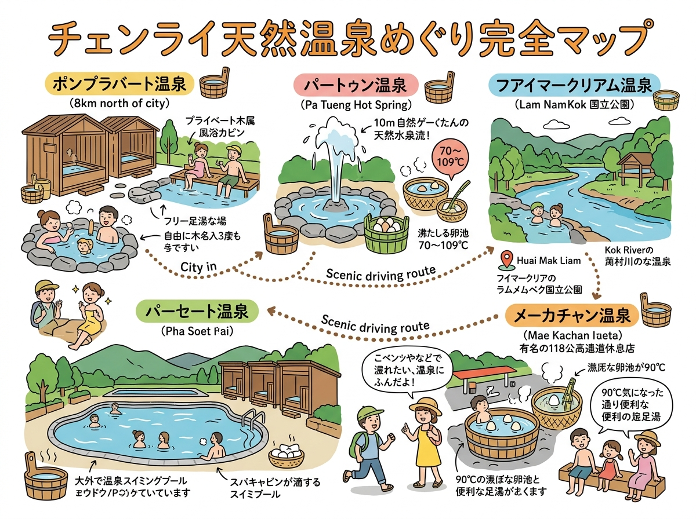

01
VISUAL GUIDE
インフォグラフィック・イラストガイド
クリックすると拡大して詳細を確認・印刷できます。

🔍 タップで拡大
A4 縦型
チェンライ県内の天然温泉（ポンプラバート・フワイサック等）利用ガイド（情報凝縮ポスター）
旅行者の持ち歩き・印刷に適した手書き風インフォグラフィック。

🔍 タップで拡大
A4 横型
周遊マップ ＆ 見開きガイド
位置関係やルート、全体像を俯瞰できるワイドデザイン。
DETAILED GUIDE & DATA
詳細ガイド ＆ データ一覧（全5件）
現地調査および公的データに基づく最新詳細情報。
02
パートゥン温泉（น้ำพุร้อนป่าตึง / ห้วยหินฝน）
03
フアイマークリアム温泉（น้ำพุร้อนห้วยหมากเลี่ยม）
04
パーセート温泉（น้ำพุร้อนผาเสริฐ）
05